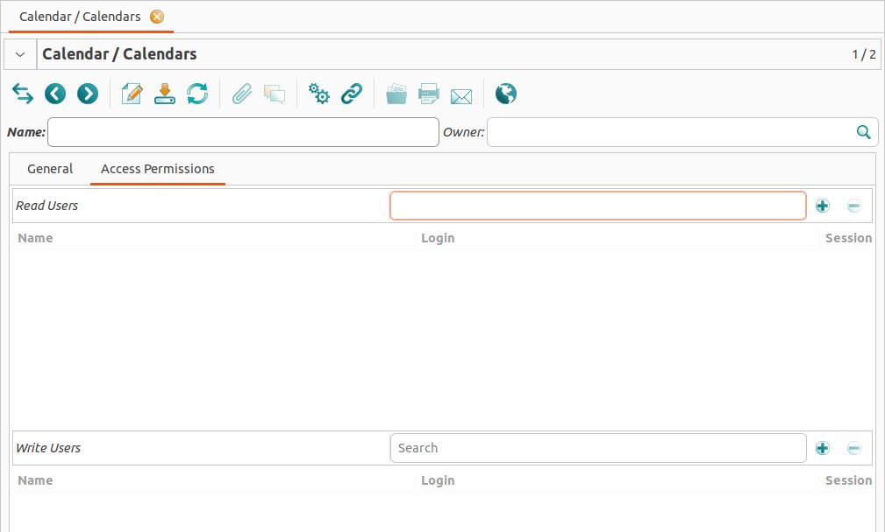
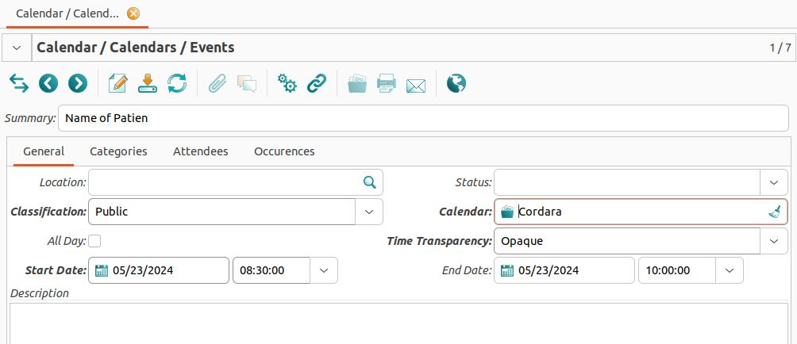
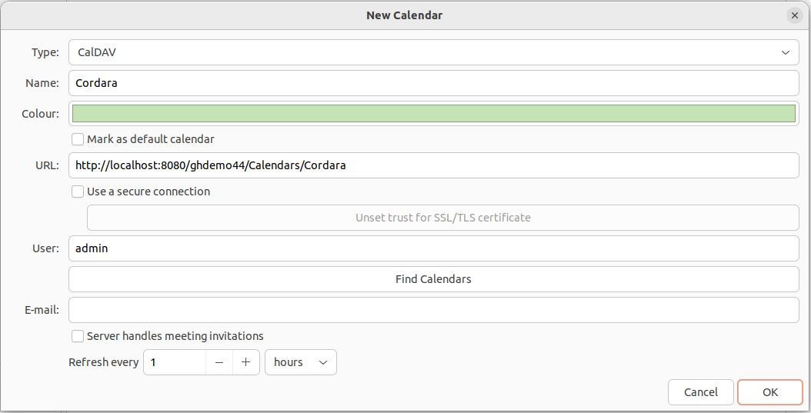

Calendar and WebDAV
GNU Health provides its own WebDAV and Caldav server. It allows to create and associate calendars to health professionals. The calendar entries for appointments, hospitalizations and other resources can be accessed via WebDAV clients.
The calendar module (health_calendar) lets the user create events and track them in a calendar.
The caldav module (health_caldav) provides a WebDAV server that will run in the background and manages the connection to Calendar applications on the client side. We use the Evolution client as an example on how to use the WebDAV server.
Warning
This module needs polishing and doesn’t work correctly.
Installation
To install the webdav functionality, you need to install the following packages
pywebdav3-gnuhealth: Python3 WebDAV library for GNU Health (installed automatically when using the standard installation method)health_webdav3_server: GNU Health WebDAV server, for Python3 and GNUHealth supporthealth_caldav: GNU Health calendar package with webdav3 and caldav supporthealth_calendar: Main calendar for appointmentshealth_inpatient_calendar: Hospitalization / bed calendar support
If you have installed GNU Health from openSUSE packages, everything is already installed.
Known clients
GNU Health Calendar system has been known to work on the following clients:
Mozilla Thunderbird, Lightning
Cadaver
Evolution
Setting up the WebDAV server
Vanilla Installation
Check the settings for the host and port of the GNU Health WebDAV server. To do so use this command as the gnuhealth user:
$ editconf
This will open the config file. The settings should look like this:
[webdav]
listen = *:8080
In this sample from the default configuration file, the WebDAV server will accept connections from any network interface, on port 8080.
Ansible Installation
If you use the Ansible installation you need to set gh_webdav to true in your inventories group_vars/gnuhealth/vars.yml before running the playbook.
Running the server
To start the server in the vanilla installation use these commands as the gnuhealth user, to swich to the WebDAV server directory:
$ cdmods
$ cd health_webdav3_server/bin
Now start the server with this command:
$ ./gnuhealth-webdav-server
If you are using the Ansible installation it should already be running if you set gh_webdav to true.
Creating a Calendar
Every calendar must be assigned to one user and every user can only have one calendar. To do so go to Calendar → Calendars and click on the “Create a new record” button. This will open this new window.


Here you need to give a name to the calendar and assign it to an owner. In the demo database there is an example with the calendar Cordara assigned to the Administrator.
In the tab “Access Permissions” you can add read and write permissions.
Creating Events
To create events go to Calendar → Calendars → Events and click on the “Create a new record” button.


Here we give the event a name and a start date. Additionally we need to assign the event to a calendar. If you create an appointment for a patient it will automatically create an event in the according calendar.
Connecting WebDAV server to Evolution
Every calendar in GNU Health needs to be assigned to one user. So in this example we have the calendar Cordara which is assigned to the admin.
To connect Evolution to the WebDAV server we need to first create a new calendar by clicking the unfoldable menu located next to the “new” button on the top left of the screen.
This will open a new window. Here you need to choose the type CalDav and enter the name of the your calendar. You also need to add the name of the user which is the same as the name of the owner of the calendar. The URL should be structured like this:
http://your_server_hostname:your_server_port/database_name/Calendars/Calendar_name
The default configuration for your_server_port is 8080.
The user and the password need to be the same as the login data of the owner of the calendar in GNU Health. At last you can choose how often the calendar gets updated.


Adding appointments in Evolution
Add an appointment by clicking on the “new” button. Enter the name of the patient and the timeslot in the boxes. Upload the appointment in by clicking the “green arrow” button.
Note: The appointment will only be known to the WebDAV server. The GNU Health GTK client doesn’t show the appointment.